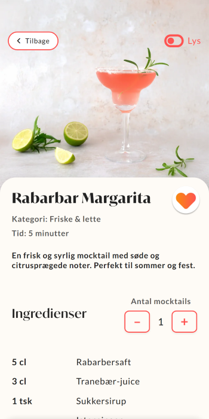
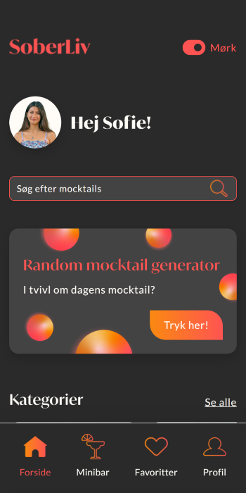

Skoleprojekt · UX · Frontend
Udviklingen
af SoberLiv
SoberLiv er et mocktail-univers designet med fokus på æstetik, funktionalitet og et intuitivt brugerflow. Projektet har haft til formål at skabe en inspirerende og inkluderende platform, hvor brugeren nemt kan finde nye mocktail-idéer – både ud fra inspiration og ud fra de ingredienser, de allerede har derhjemme.



Designvalg
Designet med brugeren i centrum
SoberLiv er udviklet med et klart fokus på brugeroplevelsen. Designet kombinerer en tydelig visuel identitet med funktionelle løsninger, der gør det nemt at generere mocktails, finde forslag og tage udgangspunkt i egne ingredienser. Hver funktion og hvert designelement er implementeret med henblik på at skabe et intuitivt og sammenhængende flow gennem hele løsningen.
Visuel retning og struktur
Designet tager udgangspunkt i en varm farvepalette og bløde former, som skaber et roligt og indbydende udtryk. Layoutet er bevidst holdt enkelt og struktureret, så indholdet fremstår klart og overskueligt. Navigation og visuelle markeringer er opbygget, så brugeren løbende kan orientere sig og nemt bevæge sig frem og tilbage i løsningen.
Samme identitet i to udtryk
SoberLiv er udviklet i både en mørk og en lys version for at imødekomme forskellige behov og præferencer. Brugeren får mulighed for selv at vælge det udtryk, der passer bedst til situationen, hvad enten det handler om komfort, lysforhold eller personlig præference. Uanset valg er struktur, funktion og navigation bevaret, så oplevelsen fortsat er genkendelig og sammenhængende.

Projektinformation
SoberLiv er udviklet i samarbejde med Sarah Nymann Jensen som en del af vores afsluttende eksamensprojekt på multimediedesigneruddannelsen i 2025. Projektet er fuldt kodet og udviklet som en funktionel løsning, men er ikke publiceret online.
Billederne indgår som en del af den visuelle præsentation af projektet og er ikke produceret af os.
Udviklet i samarbejde med Sarah Nymann Jensen
Afgangsprojekt · Multimediedesign · 2025
Tech stack: HTML · SCSS (Sass) · Bootstrap · JavaScript · PHP · MySQL
Ikke publiceret online